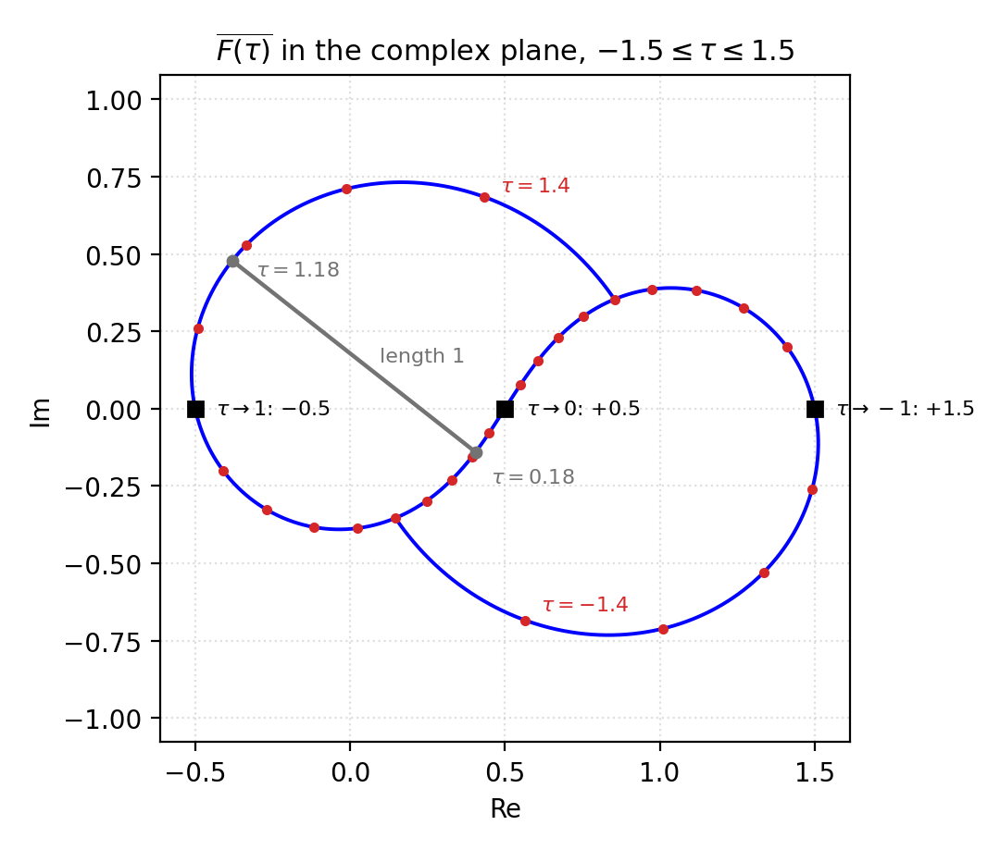
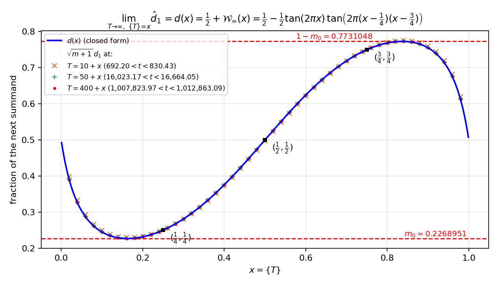
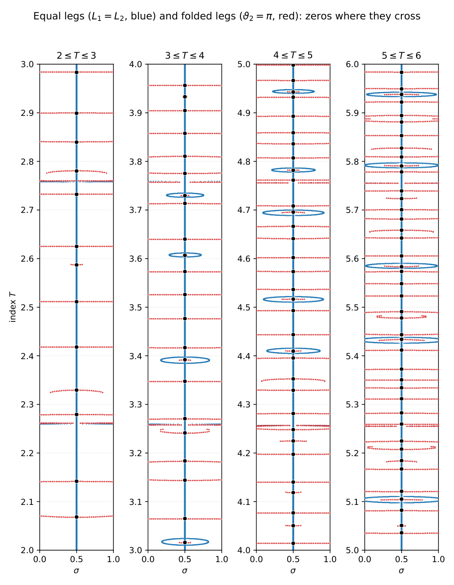

Formalizes in Lean 4 with Mathlib the algebraic identity R=R1+R2 and the critical-line consequences d1=d2 and equal legs, with no sorry.
Abstract
Starting from the Riemann-Siegel decomposition of $ζ(s)$ given in Siegel's 1932 paper, we introduce a change of variable, $t=I(T)$, that replaces Siegel's coupled pair "imaginary part $t$ / summation index $m$" with one real index $T$. We then split Siegel's single remainder integral $R$ into two exact pieces, $R_{1ps}$ and $R_{2ps}$, and prove that $R=R_{1ps}+R_{2ps}$, so that $ζ=Σ_1+R_{1ps}+Σ_2+R_{2ps}$. Our central observation is that each of these remainders is nothing more than one additional, fractional partial summand appended to its Dirichlet sum: $ζ(s)=\sum_{n=1}^{m}n^{-s}+\hat{d}_1(m+1)^{-s}+χ(s)\sum_{n=1}^{m}n^{s-1}+\hat{d}_2χ(s)(m+1)^{s-1}$, with $\hat{d}_1,\hat{d}_2$ real numbers (always positive on the critical line), the fractions of those two summands that are used. As a corollary, when $σ=\frac{1}{2}$ one has $d_1=d_2$ (equivalently $\hat{d}_1=\hat{d}_2$); this fact is formally verified in Lean. Also, with this rescaling the remainder terms are nearly periodic in $T$ with period one, converging to a fixed waveform in the fractional part of $T$. This decomposition of Siegel's $R$ was discovered through experimental mathematics using a spiral visualization of the partial sums, described later in the paper. We also discuss a number of other observations, including what we call the yin yang curves, the zero counting function, and ovals of equal length leg loci.
Problem
Siegel's 1932 Riemann–Siegel formula writes ζ(s) as two finite Dirichlet sums plus an opaque remainder integral R, with t serving both as the imaginary part of s and as the source of the summation cutoff. The aim is a cleaner structural description of that remainder.
Approach
A change of variable t=I(T) makes a single real index T determine both t and the cutoff m=⌊T⌋. Siegel's R is split exactly into R1+R2, each lying along the next (M-th) summand of its Dirichlet sum with a real weight. The algebraic identity, and the critical-line equality d1=d2 with its equal-leg corollaries, are formalized in Lean 4 with Mathlib (no axioms beyond Lean's standard three), with AI assistance in writing the Lean code. Spiral visualizations of partial sums guided the discovery.

Figure 4: The trace of \overline{F(\tau)} of ( 27 ) in the complex plane for -1.5\leq\tau\leq 1.5 , with red dots every 0.1 in \tau . The apparent poles at the integers are removable (black squares), with \overline{F(\tau)}\to\tfrac{1}{2}-n as \tau\to n : the values -\tfrac{1}{2} , +\tfrac{1}{2} , +\tfrac{3}{2} at n=1,0,-1 . Points of the curve one apart in \tau are exactly one unit apart in the p
Results
ζ equals the main and dual Dirichlet sums, each extended by one fractional summand with real weights that are positive on the critical line, where d1=d2. The rescaled weights are nearly periodic in T and converge to a limit waveform. Further observations cover yin-yang curves, zero counting and equal-leg loci.

Figure 3: The closed-form profile d(x) (blue) against the exact \sqrt{m+1}\,d_{1} sampled at T=10+x , 50+x , 400+x on the critical line. Already at T=10+x the samples sit on the curve; the marked squares are the exact values (\tfrac{1}{4},\tfrac{1}{4}) , (\tfrac{1}{2},\tfrac{1}{2}) , (\tfrac{3}{4},\tfrac{3}{4}) , and the dashed red lines are the extremes m_{0}=0.2268951\ldots and 1-m_{0}=0.7731048

Figure 21: Figures 19 and 20 overlaid: the equal-leg locus L_{1}=L_{2} (blue), the folded-leg locus \vartheta_{2}=\pi (red), the critical line (blue, since it belongs to the equal-leg locus), and the zeta zeros (black dots). A zero requires both conditions at once, so zeros occur exactly where red meets blue. On the critical line the blue locus is the line itself (Corollary 9.1 ), and every red cu